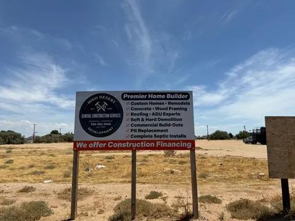
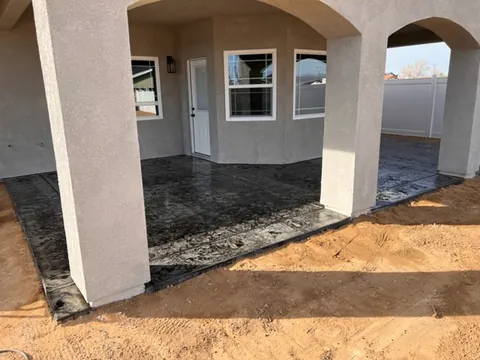
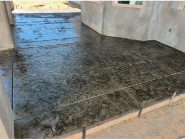

Clear Communication
Questions, expectations, and project updates are treated as an important part of the work.
About High Desert Development
Since 1999, High Desert Development has helped homeowners and businesses move from an idea to a finished space with practical planning, clear communication, and skilled construction.

Meet the contractor
Jerry Heller brings more than 30 years of construction experience to every project. His work spans custom homes, residential renovations, commercial buildings, underground utilities, concrete, framing, dirt work, and septic and sewer installation.
Construction is a meaningful investment. Jerry’s goal is to make that process easier to understand by planning carefully, answering questions, providing updates, and giving each project the attention it deserves.
High Desert Development works with homeowners shaping a more useful living space and businesses preparing to build or expand. That range of experience allows the team to see how individual trades connect and to keep the larger project in view.
How we work
Questions, expectations, and project updates are treated as an important part of the work.
Each phase is considered in relation to the finished project, from groundwork and utilities to final details.
Projects of every size receive focused attention, responsible practices, and respect for the client’s investment.


Rooted in the High Desert
Jerry’s interest in building and design began early and grew into a career centered on helping clients bring useful, lasting spaces to life. Away from the job site, he values family time, community involvement, learning new building techniques, and exploring the desert.
Start a Conversation